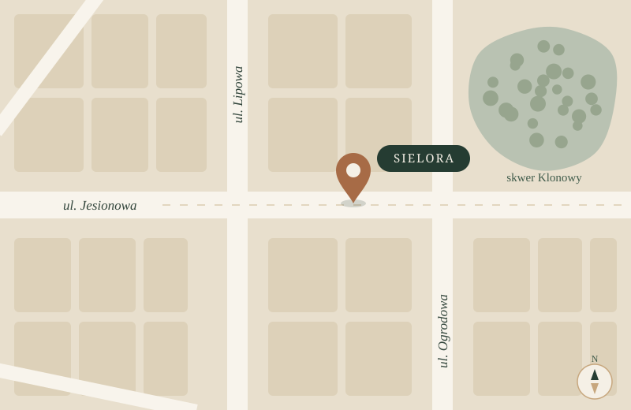

Kontakt
Masz pytanie o menu, rezerwację albo spotkanie w większym gronie? Napisz do nas.
Adres
ul. Jesionowa 1700-000 Miasto Pokazowe
Adres jest fikcyjny i służy prezentacji projektu.
To adres demonstracyjny w domenie zarezerwowanej dla przykładów, więc wiadomości nie zostaną dostarczone.
Godziny otwarcia
- Poniedziałek
- nieczynne
- Wtorek–czwartek
- 12:00–21:00
- Piątek–sobota
- 12:00–23:00
- Niedziela
- 12:00–20:00

Dojazd
Restauracja i jej lokalizacja są fikcyjne, dlatego nie publikujemy ich w serwisach mapowych. Mapa obok pokazuje jedynie, jak może wyglądać ta sekcja.
W prawdziwym wdrożeniu w tym miejscu znajdzie się opis dojazdu, najbliższych przystanków i miejsc parkingowych oraz link do mapy z dokładną lokalizacją.
Spotkania i uroczystości
Planujesz przyjęcie dla więcej niż 8 osób? W sali kameralnej przyjmiemy do 16 gości.
Napisz, jaki termin Cię interesuje, ilu gości się spodziewasz i czy ktoś ma alergię lub specjalną dietę. Przygotujemy propozycję menu i potwierdzimy dostępność sali. Najlepiej odezwij się co najmniej dwa tygodnie przed terminem.
Co warto podać w wiadomości
- Datę i orientacyjną godzinę rozpoczęcia
- Liczbę gości, w tym dzieci
- Diety i alergie uczestników
- Charakter spotkania i budżet na osobę
Dostępność lokalu
Informacje o dostępności lokalu dla osób z niepełnosprawnościami opublikujemy dopiero po ich sprawdzeniu na miejscu.
W wersji demonstracyjnej celowo nie podajemy danych o wejściu, szerokości przejść, toalecie ani miejscach parkingowych, bo nie zostały zweryfikowane. Jeśli potrzebujesz pomocy podczas wizyty, napisz do nas wcześniej.